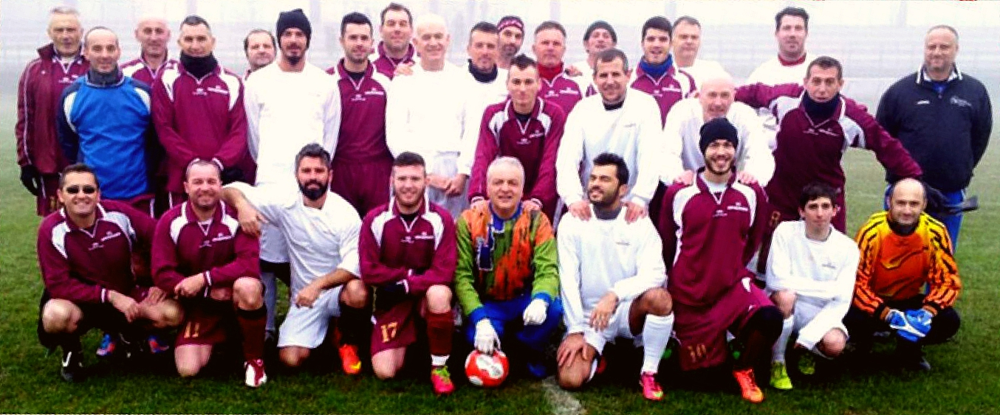

Squadre Camponogarese

Menù
La squadra dei Piccoli Amici accoglie giocatori di età dai 6 agli 8 anni.
Giocatori e ruoli
-
Portieri
- Giuseppe Rossi
- Vittorio Pellegrino
-
Difensori
- Eugenio Baldan
- Federico Dal Lago
- Vittorio Ludovico
- Pasquale Cosimo
- Mattia Leoni
- Fabio Giotto
- Marco Perin
-
Centrocampisti
- Vittorio Scarpa
- Manuel Cirillo
- Remo Ferrari
- Giacomo Moro
- Luigi Scapin
- Nicola Boscolo
- Andrea Bassi
-
Attaccanti
- Gianpiero Silvio
- Orlando Frizzi
- Alberto Volpato
- Massimo Rossi
- Angelo Zago
- Leonardo Trentin
- Mattia De Francesco
- Matteo Pavan
Torna al menu
La squadra dei Giovanissimi è composta da giocatori di età dai 9 ai 12 anni.
Giocatori e ruoli
-
Portieri
- Davide Gentile
- Simone Rizzo
-
Difensori
- Mario Tiziano
- Marco Visentini
- Tommaso Serra
- Nicolò Marangon
- Filippo Costa
- Cristian Bianchi
- Pietro Rinaldi
-
Centrocampisti
- Stefano Salvato
- Fabiano Martini
- Giovanni Piran
- Paolo Furlan
- Davide Longo
- Edoardo Bressan
- Alessio Lucchese
-
Attaccanti
- Massimo Guerra
- Silvano Gerardo
- Pietro Bianchi
- Edoardo Tonino
- Michele D'angelo
- Michele Trevisani
- Lorenzo Rossi
- Luca Ferri
Torna al menu
La squadra degli Esordienti è composta da giocatori di età dai 13 ai 15 anni.
Giocatori e ruoli
-
Portieri
-
Difensori
- Walter Mazza
- Renato D'Amico
- Silvano Testa
- Roberto Parisi
- Federico Barbieri
- Leonida Morelli
- Daniele Riva
-
Centrocampisti
- Simone Volpato
- Ezio Villa
- Filippo Zambon
- Martino Fiorin
- Gianluca Marcato
- Massimo Ferri
- Ermanno Martini
-
Attaccanti
- Francesco Bordignon
- Giulio Rossi
- Claudio Basso
- Giulio Lombardi
- Mattia Crescenzio
- Gianfranco Messina
- Marco Ferretti
- Giorgio Rambaldo
Torna al menu